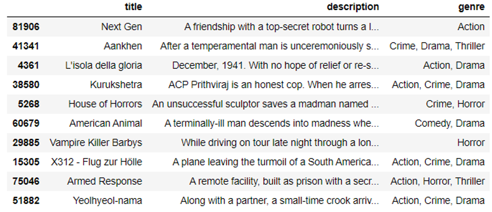
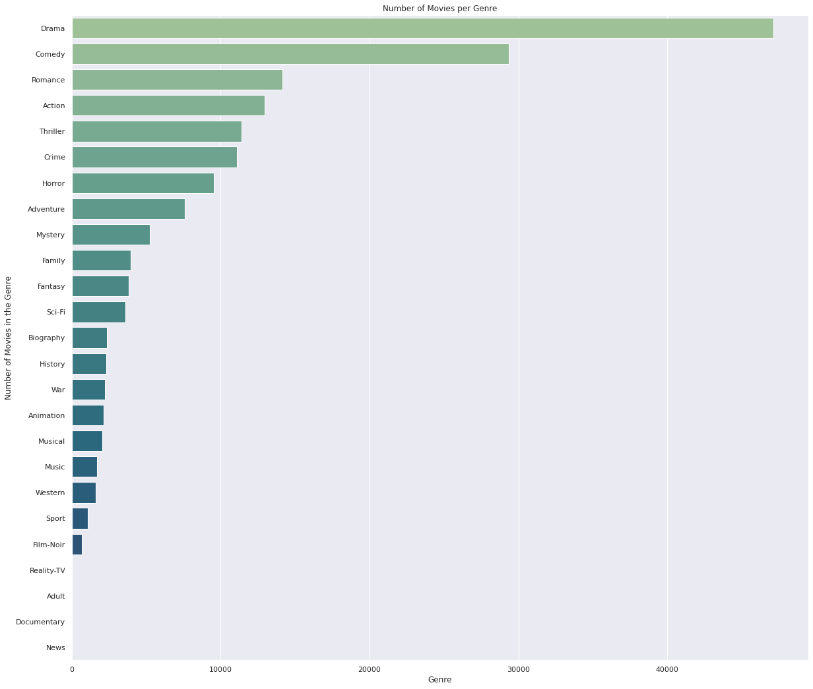
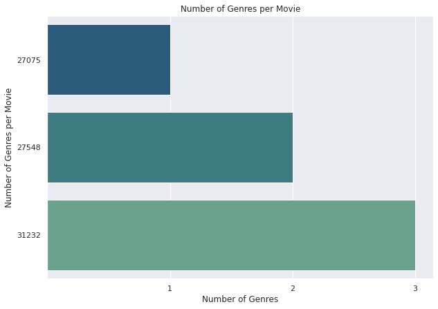
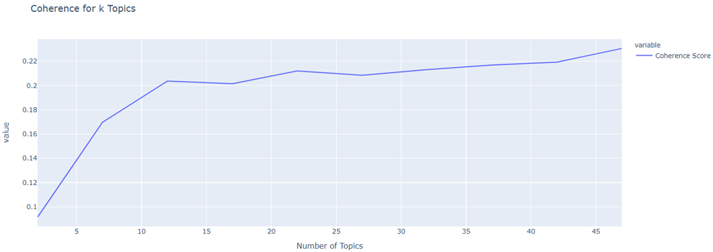
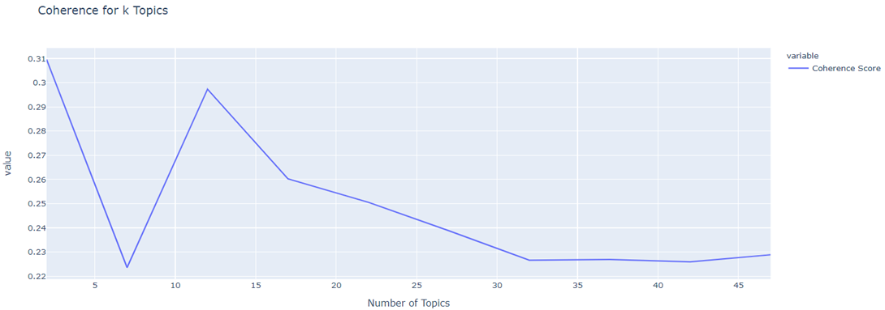

About
This site explains a natural language processing (NLP) group project done in collaboration with rogerchenrc and laviniafr. In this we tested different NLP techniques and model architectures to create a CI/CD pipeline to train and deploy a multi-label classifier. The classifier was trained on dataset of movie descriptions to predict the top fitting genre(s) with 12 possible values including: Drama, Comedy, Action, Crime, Thriller, Romance, Horror, Adventure, Mystery, Family, Fantasy and Sci-Fi. The state of the best trained model was then saved to file and deployed on a custom built web server as demonstrated in the video below:
Data
The Dataset
We decided to use the IMDb movies extensive dataset from Kaggle. This contains 84,983 samples providing a sufficient number to train a robust classifier. Although each film has many attributes, such as year of release and director, we only required the original title, description and list of genres to use as training labels. Some pre-processing was therefore required to remove samples missing this information and to remove unnecessary attributes. This lead to 2,115 samples being dropped with 83,740 remaining.

Analysing the Labels
All films have between one and three genres, each of which can be used as a label during classification. After extracting the genres from each sample, it was discovered that there were 25 unique values. However, they were not evenly distributed with 26.7% of samples belonging to Drama and eight genres with less than 1%.


As not all genres have enough representative samples, we decided to only keep the top seven. As this can cause problems when training a neural network, it was necessary
rherh
As each film has between one and three genres, we decided to perform multi-label classification. This is when the classifer is able to make multiple predictions rather than just one for each sample.
Analysing the Movie Descriptions
ScatterText
Classifier
Testing and Development
When given a sample, the model outputs one to three genres with a percentage corresponding to its relevance for each one.
Pipeline
Code
Topic Modelling
Latent Dirichlet Allocation (LDiA)
In
In

Latent Semantic Analysis
Si

Topic Modelling Code
Running the Code
The full code has been uploaded to GitHub. To download the repository, click here.
To ensure all team members could execute the code during development, it was created using a conda environment. This environment has been saved as a YAML file, environment.yml, and is included in the repository. To recreate this environment, open the Anaconda prompt and enter the command below, where environment.yml is the file path of the enviroment file.
conda env create -f environment.yml
Web application
To run the classifier web application:
- conda activate MoviePredictor
- Navigate to Web_App/flaskr
- Run command python main.py
Jupyter notebooks
Contributions
Tom
- CI/CD pipeline development
- Model training, testing and optimization
- Hosting the selected model on the backend of the web application
- Creation of this site
Roger
- Backend development of the Flask web application
- Hosting the app prototype on Heroku
- Functional testing of the application
Lavinia
- Research of web service hosting options
- Frontend development of the web application
- Creation of video demonstrations